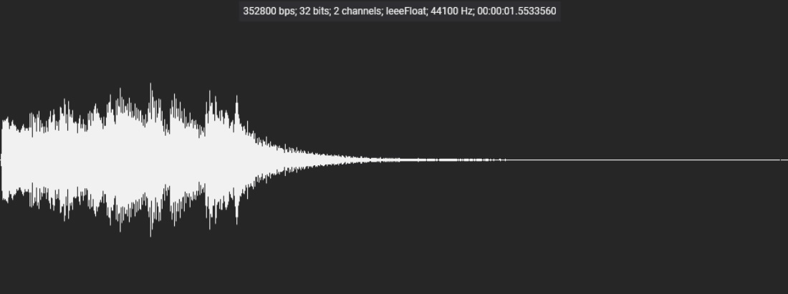
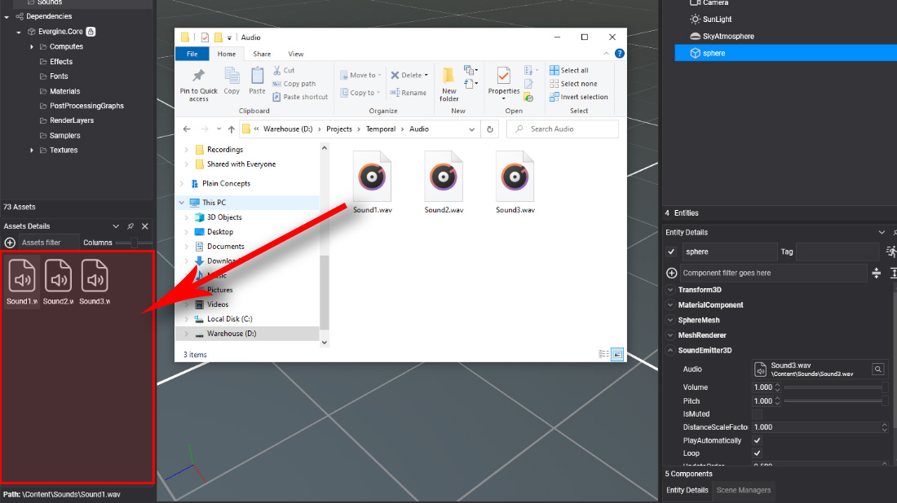
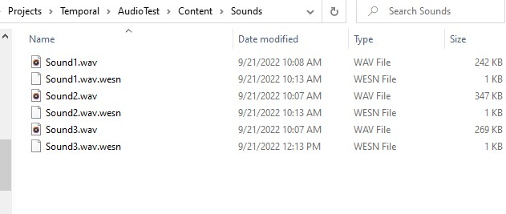

Import Audio

A sound asset is an audio file that Evergine has imported, ready to be played by a SoundEmitter3D or loaded from code as an AudioBuffer. Import your sound effects and music this way so that Evergine Studio can convert them to the format each platform profile needs.
Import an audio file in Evergine Studio
Drag an audio file into the Assets Details panel, as explained in Create Assets. Evergine Studio adds the file to your Content directory and creates the sound asset.

Supported formats
| Extension | Format | Notes |
|---|---|---|
.wav |
Waveform audio | Uncompressed PCM or 32-bit IEEE float. Float data is converted to 16-bit PCM on import. Compressed WAV encodings, such as ADPCM, are rejected. |
.mp3 |
MPEG-1/2 Audio Layer III | Decoded to 16-bit PCM on import. |
.ogg |
Ogg Vorbis | Decoded and converted to 16-bit PCM on import. |
Important
The sample rate of the source file must be one of the rates Evergine supports: 8000, 11025, 12000, 16000, 22050, 24000, 32000, 44100 or 48000 Hz. A file recorded at another rate, 96 kHz for example, fails to import. Resample it in an audio tool first.
Files in the Content directory
Importing an audio file creates a metadata file with the .wesn extension next to it. The metadata stores the asset id and the export profiles described in Audio Editor.

When the project content is built, each sound asset is exported to a .wepsn file in the format its profile asks for: the audio is mixed down to mono or up to stereo, resampled and quantized to 8 or 16 bits as needed. The original file stays untouched, so you can change the profile at any time and export again.
Tip
A sound played by a SoundEmitter3D must be mono. Set ChannelFormat to Mono in the asset profile rather than preparing a separate mono file.